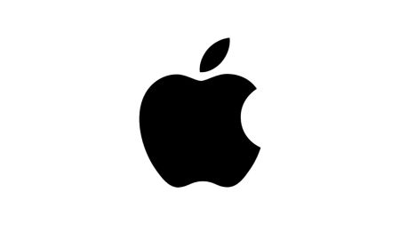

Intuitive Multi-Touch Gestures

Touch functionality feels natural with touch to
zoom, horizontal scrolling, and many more.
User Friendly Operating System

Accessible for the mainstream audience
Optimized Resource Management

The rise of iOS apps helped propel the user interacivity of their device, whether they were
paid or free to download.